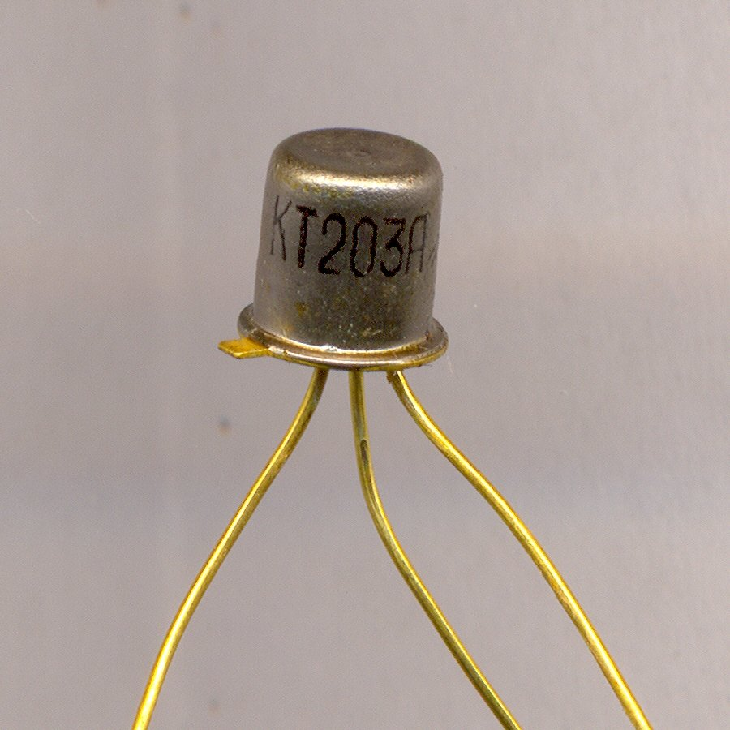
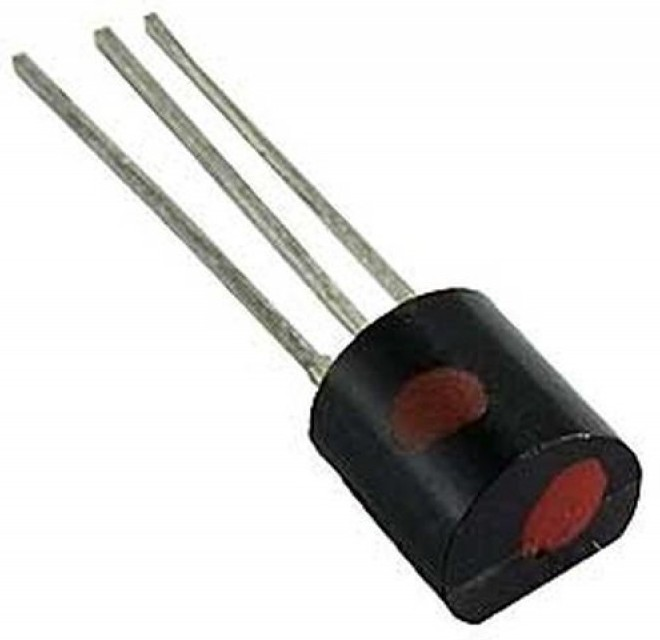
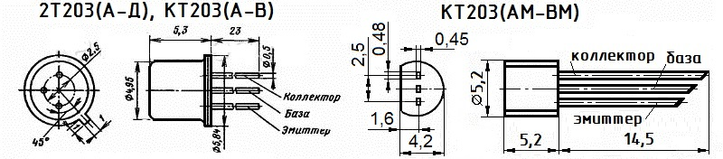

Транзистор КТ203
(КТ203А, КТ203Б, КТ203В, 2Т203А, 2Т203Б, 2Т203В, 2Т203Г, 2Т203Д)
Транзистор КТ203 - усилительный, эпитаксиально-планарный, кремниевый, структуры p-n-p. Применяется в импульсных и усилительных устройствах.
КТ203А, КТ203Б, КТ203В, 2Т203А, 2Т203Б, 2Т203В, 2Т203Г, 2Т203Д выпускаются в металлостеклянном, а КТ203АМ, КТ203БМ, КТ203ВМ в пластмассовом корпусе с гибкими выводами.
В металлостеклянном варианте тип транзистора указывается на корпусе. Пластмассовый вариант маркируется цветным кодом на торце:
- КТ203АМ - тёмно-красный.
- КТ203БМ - жёлтый.
- КТ203ВМ - тёмно-зелёный.
Боковая поверхность всех транзисторов имеет метку красного цвета.
Масса транзистора КТ203 не более 0,5 г.


Рис. 1 - Внешний вид транзисторов КТ203А (слева) и КТ203АМ (справа)

Рис. 2 - Цоколевка и размеры транзистора КТ203
Таблица 1
| Коэффициент передачи тока (в режиме малого сигнала) Uкб = 5 В, Iэ = 1 мА: |
|
| Т = +25°C: | |
| КТ203А, КТ203АМ, 2Т203А, не менее | 9 |
| 2Т203Б | 30...90 |
| 2Т203В | 15...100 |
| 2Т203Г, не менее | 40 |
| 2Т203Д | 60...200 |
| КТ203Б, КТ203БМ | 30...150 |
| КТ203В, КТ203ВМ | 30...200 |
| Т = +125°C: | |
| КТ203А, КТ203АМ, 2Т203А, не менее | 9 |
| 2Т203Б | 30...80 |
| 2Т203В | 15...200 |
| 2Т203Г, не менее | 40 |
| 2Т203Д | 60...400 |
| КТ203Б, КТ203БМ | 30...230 |
| КТ203В, КТ203ВМ | 30...400 |
| Т = -60°C: | |
| КТ203А, КТ203АМ, 2Т203А, не менее | 7 |
| 2Т203Б | 15...90 |
| КТ203В, 2Т203В, КТ203БМ | 10...100 |
| 2Т203Г, не менее | 20 |
| 2Т203Д | 30...200 |
| КТ203В, КТ203ВМ | 15...200 |
| Граничная частота коэффициента передачи тока в схеме с ОБ при Uкб = 5 В, Iэ = 1 мА, не менее: |
|
| КТ203А, КТ203Б, КТ203В, 2Т203А, 2Т203Б, 2Т203В, КТ203АМ, КТ203БМ, КТ203ВМ |
5 МГц |
| 2Т203Г, 2Т203Д | 10 МГц |
| Напряжение насыщения К-Э, не более: | |
| при Iк = 20 мА, Iб = 4 мА для КТ203Б, 2Т203Б, КТ203БМ | 1 В |
| при Iк = 10 мА, Iб = 1 мА для 2Т203Г | 0,5 В |
| при Iк = 10 мА, Iб = 1 мА для 2Т203Д | 0,35 В |
| при Iк = 20 мА, Iб = 4 мА для КТ203В, КТ203ВМ | 0,5 В |
| Ток коллектора (обратный), при Uкб = Uкб max, не более: | |
| Т = +25°C | 1 мкА |
| Т = Тмакс | 15 мкА |
| Ток эмиттера (обратный), при Uэб = Uэб max, не более | 1 мкА |
| Входное сопротивление в режиме малого сигнала в схеме с общей базой при Iэ = 1 мА, не более: |
|
| при Uкб = 50 В КТ203А, КТ203АМ, 2Т203А | 300 Ом |
| при Uкб = 30 В КТ203Б, КТ203БМ, 2Т203Б | 300 Ом |
| при Uкб = 15 В КТ203В, КТ203ВМ, 2Т203В | 300 Ом |
| при Uкб = 5 В 2Т203Г, 2Т203Д | 300 Ом |
| Ёмкость коллекторного перехода при Uкб = 5 В, f = 10 МГц, не более |
10 пФ |
Таблица 2
| Напряжение К-Б (постоянное): | |
| при Т = -60...+75°C: | |
| КТ203А, КТ203АМ, 2Т203А, 2Т203Г | 60 В |
| КТ203Б, КТ203БМ, 2Т203Б | 30 В |
| КТ203В, КТ203ВМ, 2Т203В, 2Т203Д | 15 В |
| при Т = +125°C: | |
| КТ203А, КТ203АМ, 2Т203А, 2Т203Г | 30 В |
| КТ203Б, КТ203БМ, 2Т203Б | 15 В |
| КТ203В, КТ203ВМ, 2Т203В, 2Т203Д | 10 В |
| Напряжение К-Э (постоянное) при Rбэ ≤ 2 КОм: | |
| при Т = -60...+75°C: | |
| КТ203А, КТ203АМ, 2Т203А, 2Т203Г | 60 В |
| КТ203Б, КТ203БМ, 2Т203Б | 30 В |
| КТ203В, КТ203ВМ, 2Т203В, 2Т203Д | 15 В |
| при Т = +125°C: | |
| КТ203А, КТ203АМ, 2Т203А, 2Т203Г | 30 В |
| КТ203Б, КТ203БМ, 2Т203Б | 15 В |
| КТ203В, КТ203ВМ, 2Т203В, 2Т203Д | 10 В |
| Напряжение Э-Б (постоянное): | |
| КТ203А, КТ203АМ, 2Т203А, 2Т203Г | 30 В |
| КТ203Б, КТ203БМ, 2Т203Б | 15 В |
| КТ203В, КТ203ВМ, 2Т203В, 2Т203Д | 10 В |
| Ток коллектора (постоянный) | 10 мА |
| Ток коллектора (импульсный) при tи ≤ 10 мкс, Q ≥ 10 | 50 мА |
| Рассеиваемая мощность коллектора1) (постоянная): | |
| T = -60...+75°C | 150 мВт |
| T = +125°C | 60 мВт |
| Температура p-n перехода | +150°C |
| Рабочая температура (окружающей среды) | -60...+125°C |
1) При T > +75°C Pк макс уменьшается линейно.